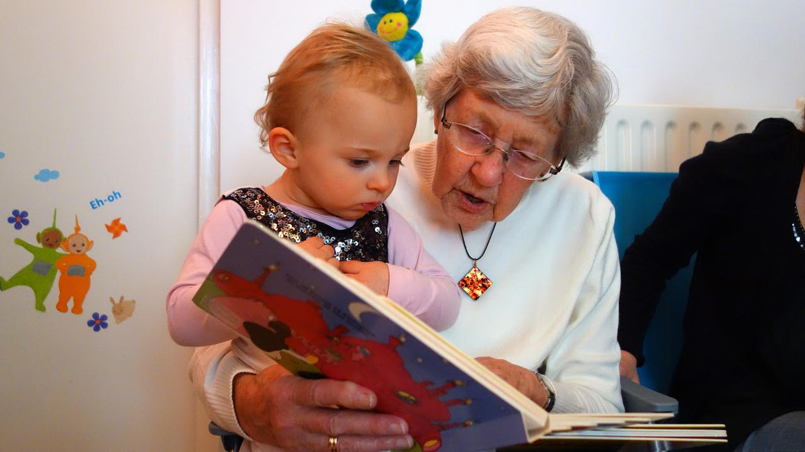
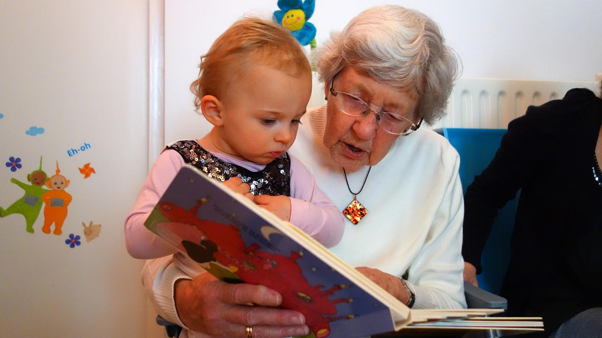

Terug naar blog
 Voorlezen gaat verder dan alleen het plezier van een goed verhaal. Het is een magische sleutel tot het ontwikkelen van spellingvaardigheid bij kinderen. In deze blogpost ontdekken we hoe deze activiteit niet alleen de verbeelding van kinderen voedt maar ook een solide basis legt voor hun taalontwikkeling.
Terug naar blog
 Voorlezen gaat verder dan alleen het plezier van een goed verhaal. Het is een magische sleutel tot het ontwikkelen van spellingvaardigheid bij kinderen. In deze blogpost ontdekken we hoe deze activiteit niet alleen de verbeelding van kinderen voedt maar ook een solide basis legt voor hun taalontwikkeling.
Voorlezen als Bouwsteen voor Taalvaardigheid
Kinderen absorberen als een spons, vooral in hun vroege jaren. Voorlezen biedt een rijke taalomgeving waarin ze nieuwe woorden leren, zinsstructuren begrijpen en hun woordenschat uitbreiden. Dit legt de fundamenten voor een sterke taalvaardigheid en helpt indirect bij het verbeteren van spelling.Interactief Voorlezen voor Actieve Deelname
Een stap verder gaan met interactief voorlezen is als het ontsteken van een taalvuurwerk. Door vragen te stellen, moedigen we kinderen aan om actief deel te nemen aan het verhaal. Dit bevordert niet alleen begrip maar helpt ook bij het herkennen en onthouden van woorden, wat op zijn beurt de spellingprestaties verbetert.De Magie van Spelend Leren
Kinderen leren het beste wanneer ze plezier hebben. Voorlezen opent de deur naar een wereld van verbeelding en avontuur. Door boeken te kiezen die de interesse van het kind wekken, wordt leren een spel. Deze speelse benadering vermindert de druk en maakt spellingvaardigheid een organisch onderdeel van het groeiproces.Creatieve Woordassociatie door Verbeelding
Voorlezen prikkelt niet alleen de verbeelding maar bevordert ook creatieve woordassociaties. Terwijl kinderen zich inleven in verhalen, maken ze mentale connecties met woorden. Deze associaties vergemakkelijken het onthouden van spelling en maken leren tot een avontuurlijke ontdekkingsreis.Tijd Tekort: Kwaliteit boven Kwantiteit
Een veelvoorkomend bezwaar tegen voorlezen is tijdgebrek. Ouders en verzorgers zijn vaak drukbezet. Het antwoord? Kwaliteit boven kwantiteit. Zelfs korte sessies van interactief voorlezen kunnen aanzienlijke voordelen bieden. Het gaat niet om de hoeveelheid tijd, maar om de betrokkenheid tijdens de leessessie.Digitale Afleiding: Balans is de Sleutel
Met de opkomst van digitale media kan de traditionele boekenwereld concurreren met schermtijd. Het antwoord is balans. Combineer digitale verhalen met klassieke oefenbladen spelling om een veelzijdige leerervaring te creëren. Het doel is om de voordelen van voorlezen te omarmen zonder volledig afhankelijk te zijn van één medium.Voorlezen: Een Investering in de Toekomst
In een wereld waar taalvaardigheid essentieel is, legt voorlezen een waardevolle basis voor spellingvaardigheid. Door de magie van verhalen te omarmen, stimuleren we niet alleen de liefde voor lezen bij kinderen, maar leggen we ook de basis voor een leven lang taalsucces. Dus, laat de boeken openen en de verhalen beginnen!Ontdek de Magie
Laat voorlezen niet slechts een activiteit zijn; maak het een ritueel. Ontdek de magie van de gesproken woorden, de betovering van verhalen, en de kracht van een spelende weg naar spellingvaardigheid. Geef je kinderen de gift van taal en zie hoe het hen begeleidt naar een toekomst vol succes!Terug naar blog